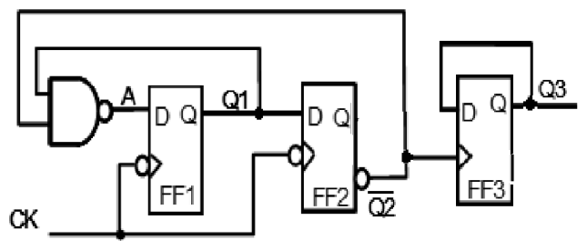
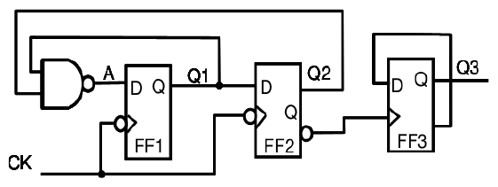
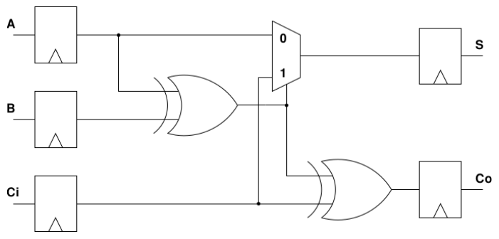

8. Setup, hold, kechikish va maksimal chastota (Fmax)
7-darsdan eslatma: D flip-flop taktning frontida D ni "suratga oladi" va Q ga chiqaradi. O'sha darsda hamma narsa bir zumda bo'ladi deb oldik. Haqiqatda esa har bir ish biroz vaqt oladi. Bu darsning hammasi shu "biroz vaqt" haqida.
1. Nega vaqt muhim?
Tranzistorlar ochilib-yopilishi uchun nanosekundlar kerak. 1 nanosekund (ns) = 0.000 000 001 soniya, ya'ni soniyaning milliarddan bir qismi. Bu juda kam, lekin takt soniyasiga yuz millionlab marta "taqillaydi". Shuning uchun nanosekundlar ham hisobga kiradi.
2. Flip-flopning uchta vaqti
Flip-flopni fotograf deb tasavvur qiling. Takt fronti bu fotoapparat tugmasi bosilgan lahza, D esa suratga tushayotgan odam.
| Belgi | Nomi | Ma'nosi | Fotograf misolida |
|---|---|---|---|
| tSU | Setup vaqti (set-up time) | D frontdan oldin shuncha vaqt o'zgarmay turishi kerak | Odam surat olinishidan oldin qimirlamay turishi kerak |
| tH | Hold vaqti (hold time) | D frontdan keyin ham shuncha vaqt o'zgarmay turishi kerak | Tugma bosilgandan keyin ham bir lahza qimirlamaslik kerak |
| tCKQ | CK→Q kechikish (propagation delay CK→Q) | Frontdan keyin Q yangi qiymatga o'tguncha ketadigan vaqt | Surat chiqib kelishi uchun ketadigan vaqt |
Savollarda tCKQ har xil yoziladi: TCK→Q, TCK=>Q, Tckq, Tck->Q, TPCK-Q. Hammasi bitta narsa.
Shart buzilsa nima bo'ladi: metastabillik
Agar D aynan front paytida o'zgarsa (setup yoki hold buzilsa), slaydda aytilishicha chiqish aniqlanmagan bo'ladi: Q 0 ham, 1 ham emas, oraliqdagi kuchlanishda qoladi yoki tebranadi. Bu holat metastabil holat (metastable state) deyiladi. Bir oz vaqt o'tib Q baribir 0 yoki 1 ga tushadi, lekin qaysi biriga va qachon tushishini oldindan aytib bo'lmaydi.
Slayddagi qoida: turli taktli bloklar orasida signal uzatilsa, metastabillikdan himoyalanish uchun ketma-ket 2 yoki undan ko'p FF qo'yiladi (resinxronizatsiya). Ularning hammasi birdaniga metastabil bo'lishi ehtimoli juda kichik.
3. Mantiqiy elementning kechikishi: tP
NAND, XOR, AND kabi elementlar ham bir zumda ishlamaydi. Kirish o'zgargandan chiqish o'zgarguncha o'tadigan vaqt tarqalish kechikishi (propagation delay) deyiladi, belgisi tP.
- tPHL (yoki "H-L"): chiqish 1 dan 0 ga tushishidagi kechikish.
- tPLH (yoki "L-H"): chiqish 0 dan 1 ga ko'tarilishidagi kechikish.
4. Asosiy formula: maksimal takt chastotasi
Bitta FF ning chiqishi mantiq orqali boshqa FF ning kirishiga boradi. Bir frontdan keyingi frontgacha (bir davr T ichida) quyidagi uch ish tugashi kerak:
- FF1 frontdan keyin chiqishini o'zgartiradi: tCKQ.
- Yangi qiymat mantiqdan o'tadi: tlogic (yo'ldagi barcha elementlar kechikishlarining yig'indisi).
- U FF2 kirishiga keyingi frontdan kamida tSU oldin yetib kelishi kerak.
Bu formula slaydda ("Minimum CK period = TPCK-Q + TPCLmax + TSU") va FSM bo'limida ("Tckmin > TCK-Q + Tdmax + Tsu") aynan shunday yozilgan.
Birliklarni o'girish
| Tmin | Fmax = 1/Tmin |
|---|---|
| 1 ns | 1 GHz = 1000 MHz |
| 10 ns | 100 MHz |
| 13 ns | 1000/13 ≈ 77 MHz |
| 20 ns | 50 MHz |
Masala yechish retsepti (har safar shu tartibda)
- Sxemadagi har bir FF → (mantiq) → FF yo'lini toping. Yo'l FF ning Q chiqishidan boshlanib, boshqa (yoki o'sha) FF ning D/J/K kirishida tugaydi.
- Har bir yo'l uchun yig'indini hisoblang: tCKQ (yo'l boshlanadigan FF niki) + yo'ldagi elementlarning kattaroq tP lari + tSU (yo'l tugaydigan FF niki).
- Eng katta yig'indi beradigan yo'l kritik yo'l (critical path, longest path) deyiladi. Tmin shu.
- Takt frontlarini tekshiring: ikkala FF bir xil frontda ishlasa, kritik yo'lga butun davr T bor. Biri ↑, ikkinchisi ↓ da ishlasa, faqat yarim davr T/2 bor (5-bo'lim).
- Fmax = 1 / Tmin.
Slayddagi misol: sinxron hisoblagich
B3 slaydida: 4 bitli sinxron hisoblagich, oxirgi FF ning kirishiga signal ikkita AND elementidan o'tib keladi. Berilgan: TAND = 10 ns, TCKQ = 8 ns, TSU = 3 ns.
- Eng uzun yo'l: FF → AND → AND → FF4.
- Tmin = 8 + 10 + 10 + 3 = 31 ns.
- Fmax = 1000 / 31 ≈ 32 MHz.
Slayd qo'shimchasi: hisoblagich qancha bitli bo'lsa, AND lar shuncha ko'p bo'ladi va Fmax kamayadi. Har qo'shimcha bosqich yana bitta TAND qo'shadi.
5. Imtihon masalalari
039-masala

Tarjima: FF chiqishlari boshida 0. Berilgan parametrlarda maksimal takt chastotasini toping.
Yechim:
- FF1 va FF2 ikkalasi ham CK dan bir xil frontda (doirachali, ↓) ishlaydi, demak butun davr bor.
- Eng uzun yo'l: FF chiqishi → NAND → FF1 ning D kirishi.
- NAND uchun kattaroq kechikish: max(5, 4) = 5 ns.
- Tmin = tCKQ + tP + tSU = 2 + 5 + 3 = 10 ns.
- Fmax = 1 / 10 ns = 100 MHz.
Th = 1 ns ishlatilmadi. Bu ataylab berilgan "ortiqcha" ma'lumot.
099-masala (039 ning boshqa raqamli varianti)

Yechim: xuddi 039 kabi, faqat raqamlar boshqa.
- Tmin = 5 + 3 + 5 = 13 ns.
- Fmax = 1000 / 13 ≈ 77 MHz.
054-masala: yarim davr

Diqqat qiling: FF1 ning takt kirishi oddiy (↑ frontda ishlaydi), FF2 ning takt kirishida esa doiracha bor (↓ frontda ishlaydi). Yechimda tCKQ = 5 ns va NAND tP = 3 ns deb olingan.
Yechim:
- Eng og'ir yo'l: FF2 (↓ front) → NAND → FF1 (↑ front). Bu yo'lga faqat T/2 vaqt bor.
- T/2 ≥ tCKQ + tP + tSU = 5 + 3 + 4 = 12 ns.
- Demak T ≥ 2 × 12 = 24 ns.
- Fmax = 1000 / 24 ≈ 41.6 MHz.
104-masala: har xil FF lar

Yechim: hamma FF bir xil CK ↑ frontda ishlaydi. Har bir yo'lni sanab chiqamiz:
| Yo'l | Hisob | Jami |
|---|---|---|
| Q1 (D FF) → FF2 ning D | 6 + 3 | 9 ns |
| Q1 yoki Q2 (D FF) → f → JK ning J, K | 6 + max(6, 7) + 2 | 15 ns |
| Q3 (JK FF) → FF1 ning D | 4 + 3 | 7 ns |
Kritik yo'l 15 ns. Fmax = 1000 / 15 ≈ 66.7 MHz.
E'tibor bering: tCKQ yo'l boshlanadigan FF dan (D FF: 6 ns), tSU esa yo'l tugaydigan FF dan (JK: 2 ns) olinadi.
6. Hold buzilishini tekshirish
Setup "signal juda sekin kelmasin" degani bo'lsa, hold "signal juda tez kelmasin" degani. Frontdan keyin FF2 ning D si yana tH vaqt o'zgarmasligi kerak. Lekin FF1 ham o'sha frontda o'zgaradi va yangi qiymat eng qisqa yo'l bilan juda tez yetib kelsa, FF2 hali "suratni olib bo'lmagan" bo'ladi.
Hold buzilmaydi, agar: tCKQ + tlogic,min ≥ tHBu yerda eng qisqa yo'l (eng kam kechikish) olinadi. Fmax esa eng uzun yo'l bilan hisoblanadi.
087-masala: Fmax va hold

1-qism, Fmax. Yo'llarni sanaymiz (XOR uchun kattaroq 0.35 ns):
| Yo'l | Hisob | Jami |
|---|---|---|
| A → MUX → S | 0.1 + 0.1 + 0.2 | 0.4 ns |
| A → XOR → MUX (tanlash kirishi) → S | 0.1 + 0.35 + 0.1 + 0.2 | 0.75 ns |
| A → XOR → XOR → Co | 0.1 + 0.35 + 0.35 + 0.2 | 1 ns |
| Ci → XOR → Co | 0.1 + 0.35 + 0.2 | 0.65 ns |
Kritik yo'l 1 ns → Fmax = 1 / 1 ns = 1 GHz.
2-qism, hold. Eng qisqa yo'l: A → MUX → S. Kechikish: tCKQ + tMUX = 0.1 + 0.1 = 0.2 ns. Bu tH = 0.15 ns dan katta. Javob: No, hold buzilishi yo'q.
O'zingizni tekshiring
Javob
Tmin = 4 + 6 + 2 = 12 ns (tH qo'shilmaydi). Fmax = 1000/12 ≈ 83 MHz.Javob
Har NAND uchun kattasi 3 ns: 5 + 3 + 3 + 5 = 16 ns (Fmax = 62.5 MHz).Javob
Yarim davr: T/2 ≥ 10 ns → T ≥ 20 ns → Fmax = 50 MHz.Javob
0.1 + 0 = 0.1 ns < 0.3 ns → ha, buziladi.Javob
Setup (yoki hold) buzilishi. Chiqish metastabil bo'ladi: 0 ham, 1 ham emas yoki tebranadi.Yangi atamalar
| Atama | Inglizchasi | Ma'nosi |
|---|---|---|
| Nanosekund (ns) | nanosecond | Soniyaning milliarddan bir qismi |
| Setup vaqti | set-up time (tSU) | D frontdan oldin barqaror turishi kerak bo'lgan vaqt |
| Hold vaqti | hold time (tH) | D frontdan keyin barqaror turishi kerak bo'lgan vaqt |
| CK→Q kechikish | clock-to-Q delay (tCKQ) | Frontdan Q o'zgarguncha vaqt |
| Tarqalish kechikishi | propagation delay (tP, tPHL, tPLH) | Element kirishidan chiqishigacha kechikish |
| Kritik yo'l | critical (longest) path | Eng ko'p kechikadigan FF→FF yo'li |
| Maksimal chastota | maximum clock frequency (Fmax) | Sxema to'g'ri ishlaydigan eng katta takt chastotasi |
| Metastabil holat | metastable state | Setup/hold buzilganda chiqish aniqlanmagan holati |
| Buzilish | violation | Vaqt shartining bajarilmasligi |
📝 Konspekt (daftarga yozib oling)
Ta'riflar
- tSU (setup): D frontdan oldin barqaror turadigan minimal vaqt.
- tH (hold): D frontdan keyin barqaror turadigan minimal vaqt.
- tCKQ: frontdan Q o'zgarguncha kechikish.
- Setup yoki hold buzilsa → metastabillik (chiqish aniqlanmagan). Himoya: ketma-ket 2+ FF.
Formulalar
Tmin = tCKQ + tlogic,max + tSU · Fmax = 1/Tmin Hold OK: tCKQ + tlogic,min ≥ tH- Fmax (MHz) = 1000 / Tmin (ns). 10 ns → 100 MHz, 1 ns → 1 GHz.
- Element tPHL ≠ tPLH bo'lsa → Fmax uchun kattasini oling.
- tCKQ yo'l boshidagi FF dan, tSU yo'l oxiridagi FF dan.
Esda tuting
- Hamma FF→FF yo'llarini sanab chiqing, eng kattasi kritik yo'l.
- tH Fmax ga kirmaydi.
- Takt belgisida doiracha bor-yo'qligini tekshiring: ↑ va ↓ aralash bo'lsa, T/2 ≥ yig'indi → T = 2 × yig'indi (054).
- Bazadagi javoblar: 039 → 100 MHz, 099 → 77 MHz, 054 → 41.6 MHz, 104 → 66.7 MHz, 087 → 1 GHz va hold buzilishi yo'q.